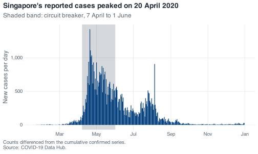
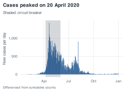
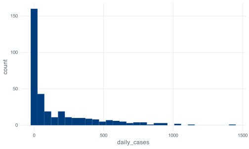
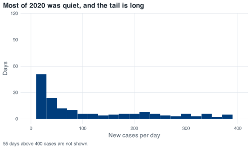
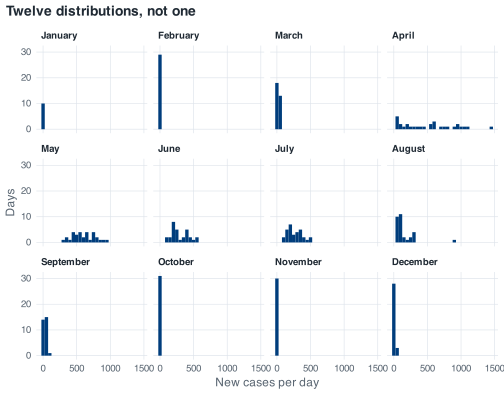
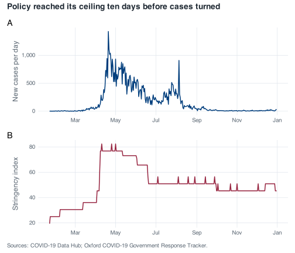
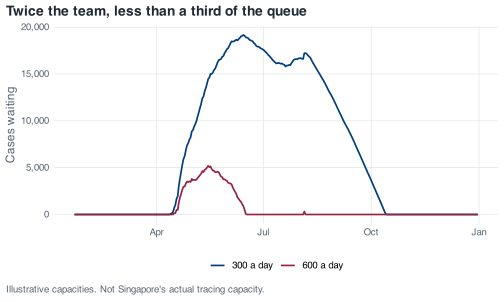
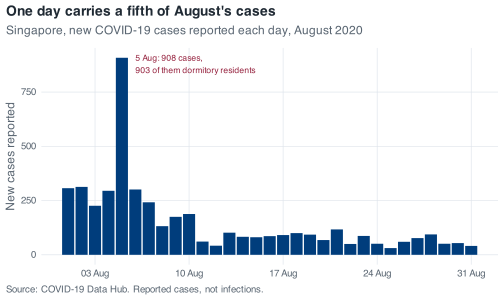
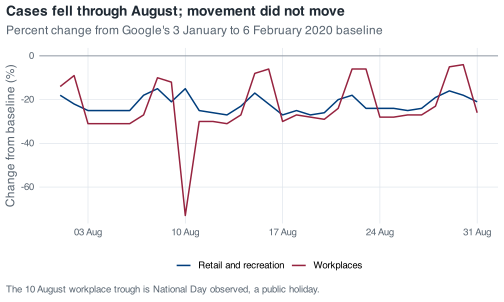

Appendix A — Worked solutions
Every exercise in the book has an answer here, and every answer on this page was executed to produce the output you see. If a number in a solution disagrees with a number you got, one of the two has a bug; track the discrepancy down.
Attempt the exercise before reading the solution. These pages work better as a check on an attempt than as a first exposure to the material.
Two objects are set up once at the top of this page and used throughout. covid is covid_daily(), the file with daily_cases, daily_deaths, severity and month already built. covid_raw is read_covid(), the file exactly as it ships, which a few of the early solutions need because the exercises are about what the raw file looks like. The book builds those four columns in front of you, one at a time, so if you are working through it in order and your own object is called something else, or does not have a column a solution here uses, that is expected. The page also follows the naming rules the chapters teach: objects and function arguments carry descriptive snake_case names such as covid_data and peak_backlog rather than single letters.
A.1 Build a week by hand
From the chapter on objects, vectors and functions: store the first seven cumulative counts, difference them, break the vector with a string, and see what one
NAdoes to a mean.
Seven elements, and the type is double rather than integer even though every value is a whole number. c(0, 1, 3) writes doubles unless you ask for integers with 0L, 1L, 3L. The distinction matters when you check typeof() output against what you expected, and almost never in practice.
Part two. Two vectors of the same length subtract element by element, so you need days two to seven in one and days one to six in the other:
week_one[2:7] - week_one[1:6]
#> [1] 1 2 0 1 1 2The differences are one, two, zero, one, one and two, so day four had no new cases at all. This is the same arithmetic that lag() performs across all 345 rows of the real file, written out small enough to see.
What this does not give you is a number for day one. There is no day zero to subtract, so six differences come out of seven values. In the full dataset the book handles that with lag(confirmed, default = 0), which is defensible here because confirmed[1] is 0.
Part three. Add a label to the front:
Every number became text. A vector holds one type, and when c() is handed a mixture it picks the type that can represent all of it. Character wins over double because any number can be written as a string, whereas "week one" cannot be written as a number. That is coercion, and it is silent by design.
The arithmetic now fails:
labelled * 2
#> Error in `labelled * 2`:
#> ! non-numeric argument to binary operatornon-numeric argument to binary operator is one of the errors you will meet most often in your first month of R, and the usual cause is exactly this: a stray label, a footnote marker, or a "N/A" typed by hand into a spreadsheet column, coercing an entire column of numbers to text on import.
Part four:
R will not guess what the missing value was, so any arithmetic that touches an NA is undefined and returns NA. na.rm = TRUE drops it and averages the remaining six, giving 3.33.
What people get wrong. They reach for na.rm = TRUE as a reflex, because it makes the NA go away and the code stops complaining. It also silently changes the denominator: the second mean is over six days, not seven, and nothing in the output says so. On seven values you can see the switch happen. Singapore’s mobility columns are missing on 24 of 345 days, and na.rm = TRUE on one of those hands you an average over 321 days with the word “year” attached to it.
A.2 Take a tibble apart
From the chapter on rectangles: show with code that a tibble is a list, get the type of every column, build a small tibble of policy dates, and find a behaviour that a plain data frame does differently.
Part one. Three functions do the whole job:
length() counts the elements of the underlying list, which is 13 columns. lengths(), with the s, measures each element, and unique() collapsing to a single value of 345 is the proof that every column has the same length. 345 is the number of rows, 13 the number of columns. Row i of every column refers to the same day, and that guarantee is what makes filter() safe.
Part two:
sapply(covid_raw, class)
#> administrative_area_level_1
#> "character"
#> confirmed
#> "numeric"
#> deaths
#> "numeric"
#> date
#> "Date"
#> stringency_index
#> "numeric"
#> government_response_index
#> "numeric"
#> containment_health_index
#> "numeric"
#> retail_and_recreation_percent_change_from_baseline
#> "numeric"
#> grocery_and_pharmacy_percent_change_from_baseline
#> "numeric"
#> parks_percent_change_from_baseline
#> "numeric"
#> transit_stations_percent_change_from_baseline
#> "numeric"
#> workplaces_percent_change_from_baseline
#> "numeric"
#> residential_percent_change_from_baseline
#> "numeric"sapply() applies class() to each column and collects the answers into a named character vector. If you want the storage type rather than the class, sapply(covid_raw, typeof) gives double where this gives numeric, and double where this gives Date, because a Date is a double with an attribute attached.
Part three:
policy <- tibble(
date = as.Date(c("2020-04-07", "2020-06-02", "2020-06-19")),
phase = c("Circuit breaker begins", "Phase 1 reopening", "Phase 2 reopening")
)
policy
#> # A tibble: 3 × 2
#> date phase
#> <date> <chr>
#> 1 2020-04-07 Circuit breaker begins
#> 2 2020-06-02 Phase 1 reopening
#> 3 2020-06-19 Phase 2 reopeningWhy a tibble rather than two vectors: sorting or filtering a tibble moves whole rows, so a date can never lose its label. With two loose vectors, sort(phase) reorders one and leaves the other alone, and nothing errors. The second reason is that the correspondence is now written down. Anyone reading policy can see that 2 June is Phase 1; with two vectors that fact lives only in the head of whoever typed them.
Part four. Convert to an old-style data frame and the difference shows up straight away:
covid_df <- as.data.frame(covid_raw)
head(covid_df$conf, 5)
#> [1] 0 1 3 3 4This is partial matching: covid_df$conf is not a column, and the data frame has helpfully decided you meant confirmed. The tibble refuses:
head(covid_raw$conf, 5)
#> Warning: Unknown or uninitialised column: `conf`.
#> NULLThe result is NULL, plus a warning naming the column you asked for. That is the behaviour you want, because partial matching turns a typo into a plausible answer. If a data frame has both confirmed and confirmed_smoothed, $conf is ambiguous and returns NULL anyway, so the convenience is unreliable as well as dangerous.
The other classic difference is single-bracket subsetting:
The data frame drops to a bare vector when you ask for one column, whereas the tibble stays a tibble. Code written as df[, cols] and then piped into something expecting a rectangle works or breaks depending on how many columns cols happened to contain that day, which is the kind of bug that only shows up on the run where a filter left you with one column.
A.3 Land the file yourself
From the chapter on reading the epidemic in: read the CSV yourself with
read_csv(), state the types explicitly, count the missing values, then read it withread.csv()and find what breaks.
Part one. In a fresh session you would need library(tidyverse) and library(here) first; this page already has them.
raw <- read_csv(here("data", "sg_covid_data.csv"))
#> Rows: 345 Columns: 13
#> ── Column specification ────────────────────────────────────────────────────────
#> Delimiter: ","
#> chr (1): administrative_area_level_1
#> dbl (11): confirmed, deaths, stringency_index, government_response_index, c...
#> date (1): date
#>
#> ℹ Use `spec()` to retrieve the full column specification for this data.
#> ℹ Specify the column types or set `show_col_types = FALSE` to quiet this message.The specification message is the answer. date (1): date means readr recognised the ISO-8601 strings and parsed the column to Date. dbl (11) covers confirmed, deaths, the three policy indices and the six mobility columns. chr (1): administrative_area_level_1 is the country name, which is "Singapore" on all 345 rows and would have been the first thing to check if it were not.
Reading that message is a habit to form now. It is the only moment R tells you what it decided about your file, and by the time a column of counts has silently become character, you are three chunks downstream wondering why mean() failed.
Part two. cols() names the columns you care about and .default mops up:
typed <- read_csv(
here("data", "sg_covid_data.csv"),
col_types = cols(
date = col_date(),
confirmed = col_double(),
administrative_area_level_1 = col_character(),
.default = col_double()
)
)
dim(typed)
#> [1] 345 13There is no message this time, because readr only reports a specification it guessed, and here you did not ask it to guess. Writing the spec out is what you do when a file is going into a pipeline that runs weekly, because it turns “the column changed type when they added a row” from a silent surprise into a loud parsing failure.
Part three:
glimpse(raw)
#> Rows: 345
#> Columns: 13
#> $ administrative_area_level_1 <chr> "Singapore", "Singa…
#> $ confirmed <dbl> 0, 1, 3, 3, 4, 5, 7…
#> $ deaths <dbl> NA, NA, NA, NA, NA,…
#> $ date <date> 2020-01-22, 2020-0…
#> $ stringency_index <dbl> 19.44, 25.00, 25.00…
#> $ government_response_index <dbl> 19.27, 24.48, 24.48…
#> $ containment_health_index <dbl> 22.02, 27.98, 27.98…
#> $ retail_and_recreation_percent_change_from_baseline <dbl> NA, NA, NA, NA, NA,…
#> $ grocery_and_pharmacy_percent_change_from_baseline <dbl> NA, NA, NA, NA, NA,…
#> $ parks_percent_change_from_baseline <dbl> NA, NA, NA, NA, NA,…
#> $ transit_stations_percent_change_from_baseline <dbl> NA, NA, NA, NA, NA,…
#> $ workplaces_percent_change_from_baseline <dbl> NA, NA, NA, NA, NA,…
#> $ residential_percent_change_from_baseline <dbl> NA, NA, NA, NA, NA,…Seven columns start with NA: deaths and the six mobility columns. Count them properly:
raw %>%
summarise(across(everything(), ~ sum(is.na(.x)))) %>%
pivot_longer(everything(), names_to = "column", values_to = "n_missing") %>%
filter(n_missing > 0)
#> # A tibble: 7 × 2
#> column n_missing
#> <chr> <int>
#> 1 deaths 59
#> 2 retail_and_recreation_percent_change_from_baseline 24
#> 3 grocery_and_pharmacy_percent_change_from_baseline 24
#> 4 parks_percent_change_from_baseline 24
#> 5 transit_stations_percent_change_from_baseline 24
#> 6 workplaces_percent_change_from_baseline 24
#> 7 residential_percent_change_from_baseline 24They do not all have the same number. The six mobility columns have 24 apiece and deaths has 59, and the two gaps have nothing to do with each other. The mobility gap runs from 22 January to 14 February because Google’s baseline period, the median by weekday over 3 January to 6 February 2020, had not finished. The deaths gap runs to 20 March because Singapore had not recorded a COVID-19 death yet, and the source file encodes “none yet” as missing rather than as zero. The two gaps have different causes, so they need different repairs. Nothing can fill in a percentage change against a baseline that had not been computed yet, so the mobility gap stays missing and the columns get reported over 321 days. A death count of “none yet” is a real zero written badly, and you can argue it back to zero as long as you say you did.
If across() and pivot_longer() are new, colSums(is.na(raw)) gets you the same numbers in one line of base R.
Part four:
The column is character: read.csv() has no date parser, so the dates arrive as strings that look right and behave like text. Anything date-shaped then fails:
base_df$date[2] - base_df$date[1]
#> Error in `base_df$date[2] - base_df$date[1]`:
#> ! non-numeric argument to binary operatorWhereas the readr version answers:
raw$date[2] - raw$date[1]
#> Time difference of 1 daysWhat people get wrong. The trap is trusting a sort on character dates. sort() on ISO-8601 dates gives the right answer by accident, because "2020-04-07" sorts after "2020-04-06" alphabetically as well as chronologically. Hand it dates written 07/04/2020 and the sort is silently wrong. If your dates are text, arrange(date) will look like it worked.
A.4 Build a circuit-breaker table
From the chapter on transforming data: use
filter(),select(),rename()andarrange()to pull the circuit-breaker period into a small table sorted by the deepest workplace mobility drops.
select() renames as it selects, so this is one call rather than two:
circuit_breaker <- covid %>%
filter(date >= as.Date("2020-04-07"), date <= as.Date("2020-06-01")) %>%
select(
date,
confirmed,
stringency = stringency_index,
retail = retail_and_recreation_percent_change_from_baseline,
workplaces = workplaces_percent_change_from_baseline
) %>%
arrange(workplaces)
circuit_breaker
#> # A tibble: 56 × 5
#> date confirmed stringency retail workplaces
#> <date> <dbl> <dbl> <dbl> <dbl>
#> 1 2020-04-10 2108 82.4 -63 -83
#> 2 2020-05-01 17101 82.4 -68 -83
#> 3 2020-05-07 20939 76.8 -66 -83
#> 4 2020-05-25 31960 73.2 -62 -82
#> 5 2020-04-23 11178 76.8 -68 -69
#> 6 2020-04-29 15641 76.8 -67 -69
#> 7 2020-04-30 16169 76.8 -67 -69
#> 8 2020-04-22 10141 76.8 -66 -68
#> 9 2020-04-27 14423 76.8 -67 -68
#> 10 2020-04-28 14951 76.8 -66 -68
#> # ℹ 46 more rowsTwo filter() conditions separated by a comma are combined with AND, which is what you want for a date range. Writing filter(date >= start & date <= end) is identical; the comma is the house style because it reads as a list of requirements.
arrange(workplaces) sorts ascending, and mobility drops are negative, so ascending puts the deepest drops first. If you wanted the same thing for a series where bigger means worse, you would need arrange(desc(...)). Check the direction every time, because a sorted table looks equally convincing either way round.
How many rows:
nrow(circuit_breaker)
#> [1] 56
as.integer(as.Date("2020-06-01") - as.Date("2020-04-07")) + 1
#> [1] 56Both routes give fifty-six: twenty-four days of April, thirty-one of May, and the first of June. The + 1 is there because subtracting two dates counts the gaps between them, not the days, and forgetting it is how a period ends up one day short in a report. The agreement between the two numbers is the check: if nrow() had come back 55, you would have a missing day in the file rather than an off-by-one in your head.
The top three rows are 10 April, 1 May and 7 May, all at 83% below baseline. They are Good Friday, Labour Day and Vesak Day. The three deepest workplace-mobility days inside Singapore’s strictest eight weeks of 2020 are public holidays, and the same holds across the whole year: the eight deepest workplace days in 2020 are all public holidays.
What people get wrong. The mistake is reading a mobility trough as a policy effect. Before you write a sentence about any dip in these series, check the date against a calendar.
A.5 Difference the deaths series
Also from the chapter on transforming data: apply the cases recipe to
deaths, run both checks on the result, and find the largest single-day rise.
deaths_daily <- covid_raw %>%
arrange(date) %>%
mutate(daily_deaths = deaths - lag(deaths, default = 0))
deaths_daily %>%
select(date, deaths, daily_deaths) %>%
slice(58:63)
#> # A tibble: 6 × 3
#> date deaths daily_deaths
#> <date> <dbl> <dbl>
#> 1 2020-03-19 NA NA
#> 2 2020-03-20 NA NA
#> 3 2020-03-21 2 NA
#> 4 2020-03-22 2 0
#> 5 2020-03-23 2 0
#> 6 2020-03-24 2 0The first check, for negative values:
any(deaths_daily$daily_deaths < 0)
#> [1] NAThe result is NA, not FALSE. NA < 0 is NA, because R has no idea whether the missing value was negative. any() then has a vector containing NAs and FALSEs and no TRUE at all, and the honest answer to “is at least one of these true?” when some of them are unknown is “I cannot tell”. So it returns NA.
Tell it to ignore the unknowns and you get the answer you wanted:
any(deaths_daily$daily_deaths < 0, na.rm = TRUE)
#> [1] FALSEThere are no negative daily deaths: the cumulative series never goes backwards.
The second check, that the daily figures add back to the cumulative total:
The plain sum() is NA for the same reason. With na.rm = TRUE you get 27, and the cumulative column ends at 29. The check fails, and it is supposed to.
Here is where the two went. deaths is missing for the first 59 rows and the first recorded value, on 21 March 2020, is already 2. So the difference on 21 March is 2 - NA, which is NA, and those two deaths never enter the sum:
Differencing recovers changes, but it cannot recover a level: a series that starts part-way up loses everything below the step, and no amount of na.rm = TRUE puts it back. The repair is a decision about what those leading NAs mean rather than a piece of code. Read them as “no deaths had occurred yet” and 21 March’s increment is 2, the daily figures add to 29, and the check passes. Read them as “not reported” and the honest total is 27 with a footnote. Both are defensible, and the report has to state which reading it uses.
The largest single-day rise:
deaths_daily %>%
slice_max(daily_deaths, n = 1) %>%
select(date, deaths, daily_deaths)
#> # A tibble: 2 × 3
#> date deaths daily_deaths
#> <date> <dbl> <dbl>
#> 1 2020-04-27 14 2
#> 2 2020-05-06 20 2Two days tie at two deaths, so slice_max(n = 1) returns both. with_ties = FALSE would give you one arbitrarily, which is fine when you want a single row and wrong when the existence of the tie is part of what you are reporting. In a year with 29 deaths, the fact that no day recorded more than two is worth a sentence on its own.
A.6 Interrogate the mobility gap
From the chapter on missing values: check whether the six mobility columns are missing on the same days, take a monthly mean that has almost no data behind it, and count days two ways.
Part one. which(is.na(x)) gives row numbers rather than a count, and row numbers can be compared:
mobility <- covid %>% select(ends_with("percent_change_from_baseline"))
na_rows <- lapply(mobility, function(x) which(is.na(x)))
lengths(na_rows)
#> retail_and_recreation_percent_change_from_baseline
#> 24
#> grocery_and_pharmacy_percent_change_from_baseline
#> 24
#> parks_percent_change_from_baseline
#> 24
#> transit_stations_percent_change_from_baseline
#> 24
#> workplaces_percent_change_from_baseline
#> 24
#> residential_percent_change_from_baseline
#> 24
all(sapply(na_rows, identical, na_rows[[1]]))
#> [1] TRUEAll six columns are missing the same 24 rows, not merely 24 rows each. identical() is doing real work there: it compares length, type and every element, so two different sets of 24 rows would come back FALSE.
Which days:
range(covid$date[na_rows[[1]]])
#> [1] "2020-01-22" "2020-02-14"22 January to 14 February 2020, one unbroken block at the start of the file. All six series are absent for the same reason: Google’s baseline is the median for each day of the week over 3 January to 6 February 2020, and until that window closed there was nothing to compute a percentage change against. There is one cause and one shape of gap, which is why the six columns move together.
Part two:
The number is −7.53. It is the mean of 15 days out of 29, and all 15 fall in the second half of the month:
Calling that “February’s average parks mobility” would tell a reader that Singaporeans spent 7.5% less time in parks across February 2020, when what the number describes is 15 February to 29 February. The first half of the month is not averaged low; it is not averaged at all, and half of February is missing from a number labelled February.
January is the harsher version: retail mobility is 100% missing that month, and mean() with na.rm = TRUE returns NaN rather than a number, because you have asked it to average nothing. An NaN at least stops you, whereas a mean over 15 of 29 days does not.
Part three. The prediction: the gap should be 24, because the missing rows are the same 24 rows for every mobility column, and the two tools treat them differently.
The two counts are 101 against 77, a gap of exactly 24. covid$parks... < -40 is a logical vector containing TRUE, FALSE and 24 NAs. The single-bracket subscript keeps every row that is not FALSE, so each NA becomes a row of nothing:
Twenty-four rows in that result have no date and no case count. filter() drops NA rows because a row that might match is not a row that does, and for the question “on how many days did parks mobility fall below −40” the honest answer is 77, with a footnote saying 24 days cannot be assessed.
What people get wrong. The 101 is what gets reported. It is a bigger number, it comes out of code that ran without complaint, and nothing on screen says a quarter of those rows are phantoms. The same arithmetic applies to every mobility column in this file, and the gap is always 24.
A.7 Audit your severity column
From the chapter on making decisions: check the three severity counts, find the range of
daily_casesinside each label, and work out how far the 100 cutoff could move before anything changed.
Steps one and two in one call. group_by() splits the rows by the value of a column, and summarise() then collapses each group to a single row, so one pipeline gives you the count and the range for all three labels at once:
215, 53 and 77 add to 345, which is every row in the file. count() is the other route and it has one advantage here: it shows an NA category if one exists.
covid %>% count(severity)
#> # A tibble: 3 × 2
#> severity n
#> <fct> <int>
#> 1 Low 215
#> 2 Medium 53
#> 3 High 77The table has three rows and no fourth row labelled NA. If a day had come back missing, this is where it would show, and the cause would be a gap in case_when()’s conditions rather than a gap in the data. case_when() returns NA when nothing matches, silently, so this check is the one that catches a cutoff you forgot to cover.
Step three is the one to think about. The largest Low day is 94 and the smallest Medium day is 100. Nothing in 2020 landed in between:
covid %>%
filter(daily_cases >= 90, daily_cases <= 110) %>%
count(daily_cases, severity)
#> # A tibble: 6 × 3
#> daily_cases severity n
#> <dbl> <fct> <int>
#> 1 91 Low 1
#> 2 93 Low 1
#> 3 94 Low 1
#> 4 100 Medium 1
#> 5 102 Medium 1
#> 6 106 Medium 1So the cutoff could sit anywhere from 95 to 100 and every one of the 345 days would keep the label it has. Move it to 101 and 18 August, which recorded exactly 100 cases, becomes Low. Move it to 94 and the same day is unaffected but the 94-case day changes. Now test that claim against every day in the file:
relabel <- function(lower) {
severity_labels <- case_when(
covid$daily_cases < lower ~ "Low",
covid$daily_cases <= 300 ~ "Medium",
covid$daily_cases > 300 ~ "High"
)
factor(severity_labels, levels = c("Low", "Medium", "High"))
}
as_written <- relabel(100)
sapply(90:105, function(t) identical(relabel(t), as_written))
#> [1] FALSE FALSE FALSE FALSE FALSE TRUE TRUE TRUE TRUE TRUE TRUE FALSE
#> [13] FALSE FALSE FALSE FALSEThe sweep returns TRUE from 95 through 100 and FALSE on either side. The upper cutoff behaves the same way: the largest Medium day is 295 and the smallest High day is 301, so 295 through 300 are interchangeable.
What that tells you is that the exact number 100 is not carrying the classification. Any cutoff from 95 to 100 produces the identical table, and the same is true of 295 to 300 at the top, so your headline does not depend on a round number picked by a worksheet author. The choice does start to matter at 50, or at 500, where the gap is wide enough to carry real days across a boundary.
A.8 Move the cutoffs
Also from the chapter on making decisions: rebuild
severitywith cutoffs at 50 and 500, compare the counts with 215 / 53 / 77, and write a defensible sentence under each rule.
recut <- covid %>%
mutate(
severity_wide = case_when(
daily_cases < 50 ~ "Low",
daily_cases <= 500 ~ "Medium",
daily_cases > 500 ~ "High"
),
severity_wide = factor(severity_wide, levels = c("Low", "Medium", "High"))
)
recut %>% count(severity_wide)
#> # A tibble: 3 × 2
#> severity_wide n
#> <fct> <int>
#> 1 Low 189
#> 2 Medium 114
#> 3 High 42The new rule gives 189 Low, 114 Medium and 42 High, against 215 / 53 / 77 under the original rule. Put them side by side to see where the days went:
recut %>% count(severity, severity_wide)
#> # A tibble: 5 × 3
#> severity severity_wide n
#> <fct> <fct> <int>
#> 1 Low Low 189
#> 2 Low Medium 26
#> 3 Medium Medium 53
#> 4 High Medium 35
#> 5 High High 42Twenty-six days that were Low are now Medium, and 35 days that were High are now Medium. No day crossed two boundaries: the wider Medium band swallowed the edges of both neighbours, and the count of High days fell by nearly half.
The factor() line matters. Leave it out and count() sorts High, Low, Medium alphabetically, which looks like a bug in your analysis and is not.
Each of the following two sentences is true of the same 345 days:
Under the original thresholds, 77 of Singapore’s 345 reported days in 2020, 22%, exceeded 300 new cases, and 62% stayed below 100.
Under thresholds of 50 and 500, only 42 days in 2020, 12%, exceeded 500 new cases, and a further 114 sat in a broad middle band.
Neither is false. The first invites the reader to conclude that a fifth of Singapore’s 2020 was a bad day. The second invites them to conclude that high-burden days were rare. A reader who sees only one of the two takes away a different impression of the same year.
A threshold is a choice, and it belongs in your methods section next to the reason for it. “300 was chosen because it is roughly the daily capacity of the contact-tracing system” is a cutoff you can defend. “300 was on the worksheet” is not, and a reader cannot tell the two apart unless you say which one applies.
A.9 High-severity days by month
From the chapter on grouping and summarising: one row per month, counting High, Medium and Low days plus the days of data in the month.
Three sum() calls inside one summarise() put the columns in the order you choose, which count() plus pivot_wider() does not:
monthly_severity <- covid %>%
group_by(month) %>%
summarise(
days = n(),
low = sum(severity == "Low"),
medium = sum(severity == "Medium"),
high = sum(severity == "High"),
cases = sum(daily_cases)
)
monthly_severity
#> # A tibble: 12 × 6
#> month days low medium high cases
#> <date> <int> <int> <int> <int> <dbl>
#> 1 2020-01-01 10 10 0 0 13
#> 2 2020-02-01 29 29 0 0 89
#> 3 2020-03-01 31 31 0 0 824
#> 4 2020-04-01 30 5 7 18 15243
#> 5 2020-05-01 31 0 0 31 18715
#> 6 2020-06-01 30 0 18 12 9023
#> 7 2020-07-01 31 0 19 12 8298
#> 8 2020-08-01 31 18 9 4 4607
#> 9 2020-09-01 30 30 0 0 953
#> 10 2020-10-01 31 31 0 0 250
#> 11 2020-11-01 30 30 0 0 203
#> 12 2020-12-01 31 31 0 0 381sum(severity == "High") works because == gives a logical vector and sum() treats TRUE as 1. It is the standard idiom for “count the rows where this holds” and it composes inside summarise() in a way that nrow(filter(...)) does not.
Check the row that will trip you up before anything else. January has 10 days, not 31, because the file starts on 22 January. Every other month is complete. That is why days is in the table: without it, January’s 13 cases read as a whole quiet month rather than as the last ten days of one.
The two questions:
monthly_severity %>% slice_max(high, n = 2)
#> # A tibble: 2 × 6
#> month days low medium high cases
#> <date> <int> <int> <int> <int> <dbl>
#> 1 2020-05-01 31 0 0 31 18715
#> 2 2020-04-01 30 5 7 18 15243
monthly_severity %>% slice_max(cases, n = 2)
#> # A tibble: 2 × 6
#> month days low medium high cases
#> <date> <int> <int> <int> <int> <dbl>
#> 1 2020-05-01 31 0 0 31 18715
#> 2 2020-04-01 30 5 7 18 15243May is the largest on both measures: every one of its 31 days was above 300 cases, and it carried 18,715 of the year’s 58,599 cases.
They can come apart, and August is the near-miss that shows how. August has 4 High days and 4,607 cases, more than September through December combined, while March has 0 High days and 824. A count of days above a threshold is insensitive to how far above the threshold those days sat, so a month of steady 320s and a month carrying one 908 can produce very different High counts for similar totals. Report both, or report the one whose question you are answering.
A.10 A monthly alert table
Also from the chapter on grouping and summarising: three statuses instead of two, then the same table under a rate-based rule, and which of the two you would defend.
alerts <- covid %>%
group_by(month) %>%
summarise(
days = n(),
high_days = sum(severity == "High"),
mean_daily = round(mean(daily_cases), 1)
) %>%
mutate(
status_days = case_when(
high_days > 5 ~ "Alert",
high_days >= 1 ~ "Watch",
TRUE ~ "All clear"
)
)
alerts
#> # A tibble: 12 × 5
#> month days high_days mean_daily status_days
#> <date> <int> <int> <dbl> <chr>
#> 1 2020-01-01 10 0 1.3 All clear
#> 2 2020-02-01 29 0 3.1 All clear
#> 3 2020-03-01 31 0 26.6 All clear
#> 4 2020-04-01 30 18 508. Alert
#> 5 2020-05-01 31 31 604. Alert
#> 6 2020-06-01 30 12 301. Alert
#> 7 2020-07-01 31 12 268. Alert
#> 8 2020-08-01 31 4 149. Watch
#> 9 2020-09-01 30 0 31.8 All clear
#> 10 2020-10-01 31 0 8.1 All clear
#> 11 2020-11-01 30 0 6.8 All clear
#> 12 2020-12-01 31 0 12.3 All clearThe ordering carries the logic. case_when() takes the first condition that matches, so high_days > 5 has to come before high_days >= 1; a month with 18 High days satisfies both, and if the >= 1 line came first, April would be labelled “Watch”. The final TRUE ~ "All clear" is the catch-all, and without it the months with zero High days would come back NA rather than falling through to a sensible default.
Now the rate-based rule. This solution uses 100 mean daily cases as the cutoff, and stating the number out loud is half the exercise:
alerts <- alerts %>%
mutate(status_rate = if_else(mean_daily > 100, "Alert", "All clear"))
alerts %>%
filter(status_days != status_rate) %>%
select(month, days, high_days, mean_daily, status_days, status_rate)
#> # A tibble: 1 × 6
#> month days high_days mean_daily status_days status_rate
#> <date> <int> <int> <dbl> <chr> <chr>
#> 1 2020-08-01 31 4 149. Watch AlertOne month changes: August, “Watch” under the day-count rule and “Alert” under the rate rule. August had 4 High days and a mean of 148.6, and the mean is being pulled up by 5 August, which recorded 908 cases against a monthly median of 91. Recompute August’s mean without that single day and it falls to 123.3, still above 100 but by much less.
The rule that is easier to defend is the day-count rule, and not because it is kinder to August. A count of days above a threshold cannot be moved by one extreme value, and 5 August is an extreme value with a known cause. MOH attributed the day’s numbers to clearance testing in the dormitories picking up past infections, 903 of the 908 were dormitory residents, and 581 were linked to a single cluster at Acacia Lodge. A rule that escalates a whole month on the strength of one day of retrospective testing is a rule that will escalate again the next time a backlog clears.
The honest version of the answer is to report both columns and let the meeting see the disagreement. A single status column hides that August is classified one way by one measure and the other way by another.
A.11 Cross-check a month that is not September
Also from the chapter on grouping and summarising: compute a month’s mean daily cases two ways, then try the same trick on January and fix what breaks.
The first route is the differenced one, applied to October:
Now the telescoping route, which never touches daily_cases at all. Every day’s increment cancels against the next one, so the total for October is the cumulative count on 31 October minus the cumulative count on 30 September:
Both routes give 8.06, and they share no intermediate column, which is what makes the agreement evidence rather than a tautology. Comparing mean() against a loop that performs the same division would prove only that R can divide.
Wrap it up so January can break it:
month_mean_telescoped <- function(covid_data, which_month) {
month_start <- as.Date(which_month)
this <- covid_data %>% filter(month == month_start)
prev <- covid_data %>% filter(month == month_start - months(1))
end_this <- this %>% slice_max(date, n = 1) %>% pull(confirmed)
end_prev <- prev %>% slice_max(date, n = 1) %>% pull(confirmed)
(end_this - end_prev) / nrow(this)
}
month_mean_telescoped(covid, "2020-10-01")
#> [1] 8.064516January:
month_mean_telescoped(covid, "2020-01-01")
#> numeric(0)The result is numeric(0): not an error, and not NA, but an empty vector. There is no December 2019 in this file, so prev has zero rows, pull(confirmed) returns a length-zero vector, and arithmetic between a length-1 vector and a length-0 vector gives length 0. R does exactly what it was asked, and the answer has nothing in it.
That is harder to catch than an error, because numeric(0) propagates. Put it in a mutate() and you get a length mismatch three steps later. Print it in a report and you get a blank cell.
The fix uses a fact about this specific file:
covid$confirmed[1]
#> [1] 0
covid$date[1]
#> [1] "2020-01-22"confirmed is 0 on the first day of the record. There is nothing before the file to subtract, because the cumulative count starts at zero:
month_mean_telescoped <- function(covid_data, which_month) {
month_start <- as.Date(which_month)
this <- covid_data %>% filter(month == month_start)
prev <- covid_data %>% filter(month == month_start - months(1))
end_this <- this %>% slice_max(date, n = 1) %>% pull(confirmed)
end_prev <- prev %>% slice_max(date, n = 1) %>% pull(confirmed)
if (length(end_prev) == 0) end_prev <- 0
(end_this - end_prev) / nrow(this)
}
month_mean_telescoped(covid, "2020-01-01")
#> [1] 1.3
january <- covid %>% filter(month == as.Date("2020-01-01"))
mean(january$daily_cases)
#> [1] 1.3The function and the direct mean both give 1.3.
Two assumptions are buried in that if. The first is that a cumulative series starting at 0 means no cases occurred before the record begins, which happens to be true here and is false for any dataset that starts mid-epidemic. The second is that January’s denominator is 10, the days present in the file, not 31, the days in the month. Both are defensible for this file and both are things you must write down, because the function will happily return a number for a file where neither holds.
A.12 Draw a publication-ready epidemic curve
From the chapter on plots: a single figure of daily cases across 2020 that stands on its own, with the circuit breaker marked, saved as a 300 dpi PNG about 3.5 inches wide.
Build it as an object so it can be printed and saved without being drawn twice:
cb_start <- as.Date("2020-04-07")
cb_end <- as.Date("2020-06-01")
p_epi <- ggplot(covid, aes(x = date, y = daily_cases)) +
annotate(
"rect",
xmin = cb_start, xmax = cb_end, ymin = -Inf, ymax = Inf,
fill = nus_colours[["muted"]], alpha = 0.25
) +
geom_col(fill = nus_colours[["blue"]], width = 1) +
scale_x_date(date_breaks = "2 months", date_labels = "%b") +
scale_y_continuous(labels = label_comma()) +
labs(
title = "Singapore's reported cases peaked on 20 April 2020",
subtitle = "Shaded band: circuit breaker, 7 April to 1 June",
x = NULL,
y = "New cases per day",
caption = "Counts differenced from the cumulative confirmed series.\nSource: COVID-19 Data Hub."
)
p_epi
Note three decisions in there. annotate("rect", ...) with ymin = -Inf and ymax = Inf shades the full height of the panel whatever the y range turns out to be, so the band does not need adjusting when the data changes. It comes before geom_col() so the bars sit on top of it rather than under it; layers are drawn in the order you add them. And date_breaks = "2 months" is a deliberate choice about collision: monthly ticks fit at 7 inches and do not fit at 3.5.
Now save it at the size it will actually be printed:
out <- tempfile(fileext = ".png")
ggsave(out, plot = p_epi, width = 3.5, height = 2.6, dpi = 300)
file.exists(out)
#> [1] TRUEIn your own script that path would be "figures/epi-curve-2020.png" rather than a temporary file, and the directory has to exist first; ggsave() will not create it for you.
That leaves the part the exercise actually asks about: open the PNG. ggplot2 measures text in points rather than as a fraction of the canvas, so halving the width does not halve the type. theme_nus() has a base size of 12 and puts the title at 1.15 times that, which is a bold 13.8-point line that fits comfortably across 7 inches and runs off the edge of 3.5. The six month labels collide for the same reason. The fix is to give the small version its own text and its own axis, rather than drawing the big one and shrinking it:
p_small <- p_epi +
labs(
title = "Cases peaked on 20 April 2020",
subtitle = "Shaded: circuit breaker",
caption = "Differenced from cumulative counts."
) +
scale_x_date(date_breaks = "3 months", date_labels = "%b") +
theme(
plot.title = element_text(size = 10),
plot.subtitle = element_text(size = 8),
plot.caption = element_text(size = 6.5),
axis.title = element_text(size = 8),
axis.text = element_text(size = 7)
)
#> Scale for x is already present.
#> Adding another scale for x, which will replace the existing scale.
p_small
ggsave(tempfile(fileext = ".png"), plot = p_small,
width = 3.5, height = 2.6, dpi = 300)The small version has a shorter title, a shorter caption, and four month ticks instead of six. The message about a scale being replaced is ggplot2 telling you that the second scale_x_date() overwrote the first, which is what was intended here and is something to look at hard when it is not.
What people get wrong. The mistake is drawing the figure at 7 inches, saving it at 7 inches, and letting the journal or the slide deck shrink it afterwards. That shrink does scale the type, because it is scaling the finished image, and 13.8-point text at half size is 7-point text, which is too small to read on the page. Size the figure for its final home.
A.13 Make the distribution legible, and say what it cost
Also from the chapter on plots: fix the histogram of
daily_cases, state exactly which days your fix removed, then facet it by month in calendar order.
The raw version first, so there is something to compare against:
ggplot(covid, aes(x = daily_cases)) +
geom_histogram()
#> `stat_bin()` using `bins = 30`. Pick better value `binwidth`.
The message about bins = 30 is ggplot2 telling you it guessed, and the guess is the wrong tool for a distribution this skewed. Thirty bins across a range of 0 to 1,426 is a bin width of 47.5, and 183 of the 345 days fall in the first one. The leftmost bar swallows the year and the rest of the panel is white space.
Here is a version with a bin width you chose and a restricted view:
ggplot(covid, aes(x = daily_cases)) +
geom_histogram(binwidth = 20) +
xlim(0, 400) +
labs(
x = "New cases per day",
y = "Days",
title = "Most of 2020 was quiet, and the tail is long",
caption = "55 days above 400 cases are not shown."
)
#> Warning: Removed 55 rows containing non-finite outside the scale range
#> (`stat_bin()`).
#> Warning: Removed 2 rows containing missing values or values outside the scale range
#> (`geom_bar()`).
The warning gives you the number for the caption. Removed 55 rows containing non-finite outside the scale range is the exact count: xlim() does not crop the picture, it drops the rows before the bins are computed, so those 55 days are not in this figure at all. They are the 55 days above 400 cases, which between them carry 36,379 of the year’s 58,599 cases. A figure that omits 62% of the epidemic needs to say so, and the caption above does. The second warning, about 2 rows removed by geom_bar(), is the two bins that straddle the edge of the new limits.
coord_cartesian(xlim = c(0, 400)) is the alternative and behaves differently: it zooms the finished plot instead of filtering the data, so the bins are computed over all 345 days, nothing is removed, and you cannot see past 400. No warning appears, which is convenient, and it is the reason xlim() is the better choice here: the warning is a record of what was dropped.
Now the faceted version, where the factor is what puts the panels in calendar order:
covid %>%
mutate(month_name = factor(format(date, "%B"), levels = month.name)) %>%
ggplot(aes(x = daily_cases)) +
geom_histogram(binwidth = 50) +
facet_wrap(~ month_name) +
labs(
x = "New cases per day",
y = "Days",
title = "Twelve distributions, not one"
)
month.name is a base R constant holding the twelve month names in order. Without the factor() call the panels come out April, August, December, February, and the plot looks broken for a reason that has nothing to do with plotting.
Which one goes in the report: the faceted one, if the question is about how the year changed. The single histogram answers “what did a typical day in 2020 look like”, and the answer, that most days were under 100 cases, is true and close to useless, because 2020 in Singapore was not one epidemic curve at one intensity. The facets show January to March sitting flat against the axis, April to July spread right across it, August straddling both with its one 908-case day out on its own, and September to December back where the year started. A single histogram flattens that contrast into a shape that describes no month in particular.
A.14 Put policy next to cases
Also from the chapter on plots: cases above, stringency below, one shared date axis, panels labelled A and B, then read the date of peak stringency off the figure and check it against the data.
The figure consists of two ordinary plots combined with /:
p_cases <- ggplot(covid, aes(x = date, y = daily_cases)) +
geom_line() +
scale_x_date(date_breaks = "2 months", date_labels = "%b") +
scale_y_continuous(labels = label_comma()) +
labs(x = NULL, y = "New cases per day")
p_stringency <- ggplot(covid, aes(x = date, y = stringency_index)) +
geom_line(colour = nus_colours[["crimson"]]) +
scale_x_date(date_breaks = "2 months", date_labels = "%b") +
labs(x = NULL, y = "Stringency index")
(p_cases / p_stringency) +
plot_annotation(
title = "Policy reached its ceiling ten days before cases turned",
caption = "Sources: COVID-19 Data Hub; Oxford COVID-19 Government Response Tracker.",
tag_levels = "A"
)
Both panels use the same scale_x_date(), which is what makes them readable as one figure. Patchwork does not force a shared axis; it stacks two independent plots, and if one of them had a different date range the tick marks would not line up and the comparison would be silently wrong.
Reading it off the figure, panel B rises in a step in early April and flattens at its ceiling, and panel A is still climbing at that point. Checking against the data:
The maximum of 82.41 is reached on three separate days and the first is 10 April 2020. slice_max() would give you the same three rows, which is why the exercise warns you about it: with n = 1 and default with_ties = TRUE you get all three, and arrange(date) then puts the earliest first. Taking slice_max(..., n = 1, with_ties = FALSE) and calling the result “the date” would report one of three tied dates as though it were the only one.
Cases had not peaked on 10 April. The peak was 1,426 on 20 April, ten days later, and on 10 April the count was 198:
covid %>% slice_max(daily_cases, n = 1) %>% select(date, daily_cases)
#> # A tibble: 1 × 2
#> date daily_cases
#> <date> <dbl>
#> 1 2020-04-20 1426Ten days between the policy ceiling and the case peak is consistent with an incubation period plus a testing and reporting delay, and it is also consistent with a dormitory testing programme that was expanding through April independently of anything the index measures. This file cannot separate those, so the sentence to write is about the sequence, not the cause.
One thing not to do with panel B: read the small steps after July. There are 23 changes in the index after 1 July and several last a single day, which is indistinguishable from an encoding artifact in the source. A one-day tick is not a policy announcement.
A.15 Generalise the alert
From the chapter on writing functions: let the caller choose which mobility series to check, keeping retail as the default, then count the days below −60 for workplaces and for parks.
Passing a column name into a dplyr verb from inside a function needs { } around the argument, which tells dplyr to look for the name in the data frame rather than in the calling environment:
mobility_alert <- function(covid_data,
column = retail_and_recreation_percent_change_from_baseline,
threshold = -30) {
if (threshold > 0) {
stop("`threshold` should be negative. Mobility is measured as percentage change ",
"from baseline, so a drop of 30% is -30, not 30.", call. = FALSE)
}
covid_data %>%
filter({{ column }} < threshold) %>%
pull(date)
}The default is a bare column name, not a string, and it works because R does not evaluate a default argument until the function body needs it, by which point filter() has the data frame in scope. Existing calls are unaffected:
length(mobility_alert(covid))
#> [1] 88The answer is eighty-eight, the same as before the rewrite. Adding an argument in the middle of a signature breaks every existing call that relied on position, and putting the new argument after covid_data with a default that reproduces the old behaviour is what keeps that from happening.
The two counts:
The counts are forty-one days for workplaces and 37 for parks. Both counts exclude the 24 days with no mobility data, because filter() drops rows where the condition is NA, and that behaviour is now inherited by every call to this function.
The deepest workplace days:
covid %>%
slice_min(workplaces_percent_change_from_baseline, n = 8) %>%
select(date, workplaces_percent_change_from_baseline) %>%
mutate(weekday = wday(date, label = TRUE))
#> # A tibble: 8 × 3
#> date workplaces_percent_change_from_baseline weekday
#> <date> <dbl> <ord>
#> 1 2020-04-10 -83 Fri
#> 2 2020-05-01 -83 Fri
#> 3 2020-05-07 -83 Thu
#> 4 2020-05-25 -82 Mon
#> 5 2020-08-10 -73 Mon
#> 6 2020-07-10 -72 Fri
#> 7 2020-07-31 -72 Fri
#> 8 2020-12-25 -70 FriAll eight are public holidays: Good Friday on 10 April, Labour Day on 1 May, Vesak Day on 7 May, Hari Raya Puasa observed on 25 May, National Day observed on 10 August, polling day for the general election on 10 July, Hari Raya Haji on 31 July, and Christmas Day.
The interesting one is 10 July. The other seven are religious or seasonal holidays that recur every year and drag other things along with them, so a mobility trough on Good Friday tells you about Good Friday rather than about COVID-19. Polling day has none of that. It is a one-off public holiday, it sat inside Phase 2 with no change in restrictions around it, and workplace mobility fell 72% below baseline anyway. If you want a clean read on how far this series can move for a reason that has nothing to do with the epidemic, that is the day to look at.
What people get wrong. The failure is writing filter(column < threshold) without the braces. R then looks for an object called column in the calling environment, does not find one, and the error is object 'column' not found, which points at the wrong thing entirely. Or, worse, there is something called column in your global environment and the function quietly filters on that.
A.16 Add a judgement to the summary
Also from the chapter on writing functions: give
month_summary()averdictcolumn, run it on September and April, and decide whether five High days is a defensible cut-off.
summarise() cannot reliably refer to a column it is creating in the same call, so the verdict goes in a mutate() afterwards. The cut-off is also an argument here, for reasons given below:
month_summary <- function(covid_data, which_month, high_cut = 5) {
start <- floor_date(as.Date(which_month), "month")
if (!start %in% covid_data$month) {
stop("No data for ", format(start, "%B %Y"), ". The data covers ",
format(min(covid_data$month), "%B %Y"), " to ",
format(max(covid_data$month), "%B %Y"), ".", call. = FALSE)
}
covid_data %>%
filter(month == start) %>%
summarise(
month = start,
days = n(),
total = sum(daily_cases),
mean_daily = round(mean(daily_cases), 1),
peak = max(daily_cases),
peak_date = date[which.max(daily_cases)],
high_days = sum(severity == "High")
) %>%
mutate(verdict = if_else(high_days > high_cut, "Escalate", "All clear"))
}
month_summary(covid, "2020-09-01")
#> # A tibble: 1 × 8
#> month days total mean_daily peak peak_date high_days verdict
#> <date> <int> <dbl> <dbl> <dbl> <date> <int> <chr>
#> 1 2020-09-01 30 953 31.8 86 2020-09-11 0 All clear
month_summary(covid, "2020-04-01")
#> # A tibble: 1 × 8
#> month days total mean_daily peak peak_date high_days verdict
#> <date> <int> <dbl> <dbl> <dbl> <date> <int> <chr>
#> 1 2020-04-01 30 15243 508. 1426 2020-04-20 18 EscalateSeptember has 30 days, 953 cases, a mean of 31.8, a peak of 86 and zero High days, and its verdict is “All clear”. April has 15,243 cases, a peak of 1,426 on the 20th and 18 High days, and its verdict is “Escalate”. Both verdicts match what the case counts say, which is the check the exercise asked for. Running the function across all twelve months, below, is what shows whether the rule behaves sensibly over the whole year.
Whether five is defensible cannot be read off this file directly. Look at the whole year:
list_rbind(map(unique(covid$month), function(m) month_summary(covid, m))) %>%
select(month, days, total, mean_daily, high_days, verdict)
#> # A tibble: 12 × 6
#> month days total mean_daily high_days verdict
#> <date> <int> <dbl> <dbl> <int> <chr>
#> 1 2020-01-01 10 13 1.3 0 All clear
#> 2 2020-02-01 29 89 3.1 0 All clear
#> 3 2020-03-01 31 824 26.6 0 All clear
#> 4 2020-04-01 30 15243 508. 18 Escalate
#> 5 2020-05-01 31 18715 604. 31 Escalate
#> 6 2020-06-01 30 9023 301. 12 Escalate
#> 7 2020-07-01 31 8298 268. 12 Escalate
#> 8 2020-08-01 31 4607 149. 4 All clear
#> 9 2020-09-01 30 953 31.8 0 All clear
#> 10 2020-10-01 31 250 8.1 0 All clear
#> 11 2020-11-01 30 203 6.8 0 All clear
#> 12 2020-12-01 31 381 12.3 0 All clearAcross the twelve months, high_days only ever takes the values 0, 4, 12, 18 and 31. Nothing sits between 4 and 12. Five splits the year into four escalating months and eight clear ones, and so does any cut-off from 4 up to 11. Drop to 3 and August joins the escalating group; go up to 12 and June and July leave it. So the rule is stable against small changes in the cut-off, and the data gives no reason to prefer five over any other number between 4 and 11.
August is where the rule shows its weakness. It has four High days and is therefore “All clear”, on a month that recorded 4,607 cases, more than September through December put together. The rule counts days over 300, and August’s burden was distributed differently.
That is why high_cut is an argument rather than a hard-coded 5, and not because the caller will change it often: a default in the signature is visible to anyone reading the function, whereas the same number written into the body has to be hunted for. Set it once, at the top, where a reviewer can see it and disagree with it:
month_summary(covid, "2020-08-01", high_cut = 3) %>%
select(month, high_days, mean_daily, verdict)
#> # A tibble: 1 × 4
#> month high_days mean_daily verdict
#> <date> <int> <dbl> <chr>
#> 1 2020-08-01 4 149. EscalateA.17 Cumulative deaths, both ways
From the chapter on loops: difference the
deathscolumn with an explicitforloop, then withlag(), check the two withidentical(), and account for the gap against 29.
The loop is the same shape as the one the chapter wrote for confirmed:
The first eight values are NA, because deaths is missing for the first 59 days. The vectorised version:
The comparison is TRUE: the two agree, including on where the NAs fall, which is the part to check: identical() treats NA as a value like any other, so a version that produced NA in a different place would come back FALSE even if every real number matched.
The reconciliation:
The sum is 27 against a final cumulative figure of 29, with 60 missing values in the differenced series.
The count is sixty, not 59, and that is the detail to account for. deaths is NA for rows 1 to 59, and row 60, which is 21 March 2020, is the first day with a recorded value. Its difference is 2 - NA, which is NA, so the differenced series is missing for one row longer than the raw column is:
covid %>%
slice(58:62) %>%
select(date, deaths, daily_deaths)
#> # A tibble: 5 × 3
#> date deaths daily_deaths
#> <date> <dbl> <dbl>
#> 1 2020-03-19 NA NA
#> 2 2020-03-20 NA NA
#> 3 2020-03-21 2 NA
#> 4 2020-03-22 2 0
#> 5 2020-03-23 2 0The first recorded value is 2, not 1. Two deaths had already occurred by the time the series starts, and differencing recovers changes rather than levels, so those two are unrecoverable from this column. 29 minus 2 is 27, and the arithmetic closes.
None of that is an error in your code. It is what the file says, and the useful response is to write it down rather than to patch it. Chapter 6 shows the patch, which is a decision about whether the leading NAs mean “zero deaths so far” or “not reported”, and those two readings give different answers.
A.18 How big does the team need to be?
Also from the chapter on loops: turn the tracing backlog into a function of capacity, sweep it across five team sizes, and explain why doubling the team more than halves the peak queue.
The loop is the chapter’s, with the two things that vary lifted into arguments:
Five team sizes means five runs, and copying the loop four times with one number changed is the failure mode Chapter 10 is about. max(0, ...) stays inside the loop, because moving it outside is what gives you the flat zero line the chapter showed.
Then the summary function returns one row, so five of them stack:
team_summary <- function(capacity) {
backlog <- backlog_run(covid$daily_cases, capacity)
peak <- which.max(backlog)
after <- backlog[seq_along(backlog) > peak]
tibble(
capacity = capacity,
peak_backlog = max(backlog),
peak_date = covid$date[peak],
days_behind = sum(backlog > 0),
cleared = any(after == 0)
)
}
teams <- c(200, 300, 400, 600, 800) %>%
map(team_summary) %>%
list_rbind()
teams
#> # A tibble: 5 × 5
#> capacity peak_backlog peak_date days_behind cleared
#> <dbl> <dbl> <date> <int> <lgl>
#> 1 200 28974 2020-08-07 267 FALSE
#> 2 300 19172 2020-06-14 184 TRUE
#> 3 400 13270 2020-06-04 132 TRUE
#> 4 600 5192 2020-05-15 64 TRUE
#> 5 800 1487 2020-04-24 21 TRUEcleared has to look only at the days after the peak. Every one of these runs starts at zero and stays there through the quiet first months, so asking “was the queue ever empty” would answer TRUE for all five and tell you nothing.
The 200-a-day row is the one to read first. Singapore averaged 169.9 cases a day across 2020, so a team sized at 200 is comfortably above the year’s mean, and it never recovers: 267 days behind, and still 3,576 cases in the queue on 31 December. Sizing capacity against an annual mean leaves the team permanently behind, because that mean summarises a series whose median is 40 and whose maximum is 1,426.
The two runs the question asks about are drawn together:
runs <- c(300, 600) %>%
map(function(team_size) {
tibble(date = covid$date, backlog = backlog_run(covid$daily_cases, team_size),
team = paste(team_size, "a day"))
}) %>%
list_rbind()
ggplot(runs, aes(date, backlog, colour = team)) +
geom_line(linewidth = 0.8) +
scale_x_date(date_labels = "%b") +
scale_y_continuous(labels = label_comma()) +
labs(
x = NULL, y = "Cases waiting", colour = NULL,
title = "Twice the team, less than a third of the queue",
caption = "Illustrative capacities. Not Singapore's actual tracing capacity."
)
teams %>%
filter(capacity %in% c(300, 600)) %>%
select(capacity, peak_backlog, days_behind) %>%
mutate(
backlog_ratio = round(peak_backlog / peak_backlog[1], 2),
days_ratio = round(days_behind / days_behind[1], 2)
)
#> # A tibble: 2 × 5
#> capacity peak_backlog days_behind backlog_ratio days_ratio
#> <dbl> <dbl> <int> <dbl> <dbl>
#> 1 300 19172 184 1 1
#> 2 600 5192 64 0.27 0.35Doubling the team cuts the peak backlog to 27% of what it was, from 19,172 to 5,192, and the days spent behind to 35%, from 184 to 64. Both are much better than halving.
The reason is that the backlog is built only out of the days when arrivals exceed capacity, and raising capacity attacks those days twice over. It shrinks what each overflow day contributes — 1 May had 932 cases, which is 632 over a team of 300 and 332 over a team of 600 — and it removes days from the overflow entirely, because 77 days of 2020 had more than 300 cases and only 29 had more than 600.
tibble(
capacity = c(300, 600),
days_over = c(sum(covid$daily_cases > 300), sum(covid$daily_cases > 600)),
total_over = c(sum(pmax(0, covid$daily_cases - 300)),
sum(pmax(0, covid$daily_cases - 600)))
)
#> # A tibble: 2 × 3
#> capacity days_over total_over
#> <dbl> <int> <dbl>
#> 1 300 77 20933
#> 2 600 29 6091Total overflow across the year falls from 20,933 to 6,091, a factor of 3.4, and the peak follows it down by a factor of 3.7.
What makes this happen is the shape of the case series rather than anything about queues in the abstract. Singapore’s 2020 daily counts are heavily skewed, with a median of 40 against a maximum of 1,426, so most days are nowhere near capacity at either team size and the whole queue is decided by about two months in the middle of the year. Capacity added above the bulk of a distribution buys more than capacity added inside it. The practical version of that: if you are asked how many contact tracers to hire, the answer depends on the shape of the peak you expect and not on the total you expect, and those two numbers can move in opposite directions.
A.19 Write the August 2020 situation report
From the capstone chapter: the one-page report for August 2020, with a table, two figures, three sentences and a note on what the analysis cannot tell you.
August’s decision is 5 August, and everything below turns on how it gets handled. So the maximum, the median and the date of the maximum come out first, before anything else is computed:
report_month <- as.Date("2020-08-01")
august <- covid %>% filter(month == report_month)
nrow(august)
#> [1] 31
august %>%
summarise(
days = n(),
cases = sum(daily_cases),
mean_daily = round(mean(daily_cases), 1),
median_daily = median(daily_cases),
peak = max(daily_cases),
peak_date = date[which.max(daily_cases)],
deaths = sum(daily_deaths)
)
#> # A tibble: 1 × 7
#> days cases mean_daily median_daily peak peak_date deaths
#> <int> <dbl> <dbl> <dbl> <dbl> <date> <dbl>
#> 1 31 4607 149. 91 908 2020-08-05 0The mean is 148.6 and the median is 91. When those two are that far apart, the mean is describing one day rather than the month. Look at the top of the distribution:
august %>%
slice_max(daily_cases, n = 5) %>%
select(date, daily_cases)
#> # A tibble: 5 × 2
#> date daily_cases
#> <date> <dbl>
#> 1 2020-08-05 908
#> 2 2020-08-02 313
#> 3 2020-08-01 307
#> 4 2020-08-06 301
#> 5 2020-08-04 295The peak is 908 on 5 August, and the next highest day is 313, so one day carries 19.7% of the month’s cases. This is the decision the exercise refers to, and the wrong response is to delete the day. It happened, the cases were real, and MOH attributed the count to clearance testing in the dormitories picking up past infections: 903 of the 908 were dormitory residents and 581 were linked to a single cluster at Acacia Lodge. A case detected on 5 August was not necessarily an infection that occurred on 5 August, and that distinction belongs in the report, not in a filter.
The solution therefore reports both figures and says why:
august %>%
filter(date != as.Date("2020-08-05")) %>%
summarise(
days = n(),
cases = sum(daily_cases),
mean_daily = round(mean(daily_cases), 1),
median_daily = median(daily_cases),
peak = max(daily_cases)
)
#> # A tibble: 1 × 5
#> days cases mean_daily median_daily peak
#> <int> <dbl> <dbl> <dbl> <dbl>
#> 1 30 3699 123. 89 313Without 5 August the mean falls from 148.6 to 123.3 and the median barely moves, from 91 to 89. The median was already describing a typical August day, which is the reason to report one alongside the mean in a monthly table.
Deaths are 0 for August. The cumulative column reads 27 on 31 July and 27 on 31 August, so this is a real zero and not a gap, and August is late enough in the year that the leading NA problem in deaths does not touch it.
A.19.1 The table
august_weeks <- august %>%
mutate(week = floor_date(date, "week", week_start = 1)) %>%
group_by(week) %>%
summarise(
days = n(),
cases = sum(daily_cases),
median_daily = median(daily_cases),
peak = max(daily_cases),
retail = round(mean(retail_and_recreation_percent_change_from_baseline)),
stringency = round(mean(stringency_index), 1)
)
august_weeks
#> # A tibble: 6 × 7
#> week days cases median_daily peak retail stringency
#> <date> <int> <dbl> <dbl> <dbl> <dbl> <dbl>
#> 1 2020-07-27 2 620 310 313 -20 50.9
#> 2 2020-08-03 7 2279 242 908 -22 51.7
#> 3 2020-08-10 7 643 83 188 -22 50.9
#> 4 2020-08-17 7 606 91 117 -24 51.7
#> 5 2020-08-24 7 418 54 94 -21 51.7
#> 6 2020-08-31 1 41 41 41 -21 50.9Read days first. August 2020 began on a Saturday, so the first row covers two days and the last covers one, and comparing cases across those rows would be comparing different amounts of time. median_daily is in the table instead of a mean for the reason above, and it does the job: 310 and 242 in the first two weeks, then 83, 91, 54 and 41. The month steps down sharply after 9 August and then drifts, which is not what the cases column shows, because week two’s total is inflated by the 5 August spike.
A.19.2 The first figure
spike <- as.Date("2020-08-05")
p_aug_cases <- ggplot(august, aes(x = date, y = daily_cases)) +
geom_col(fill = nus_colours[["blue"]]) +
annotate("text", x = spike + 1, y = 880, hjust = 0, size = 3,
colour = nus_colours[["crimson"]],
label = "5 Aug: 908 cases,\n903 of them dormitory residents") +
scale_x_date(date_breaks = "1 week", date_labels = "%d %b") +
scale_y_continuous(labels = label_comma()) +
labs(
title = "One day carries a fifth of August's cases",
subtitle = "Singapore, new COVID-19 cases reported each day, August 2020",
x = NULL, y = "New cases reported",
caption = "Source: COVID-19 Data Hub. Reported cases, not infections."
)
p_aug_cases
The figure uses bars rather than a line, because 31 discrete daily counts are exactly the case where individual days matter and there is nothing measured in between. The annotation does the work that a footnote would otherwise have to do, and the title makes a claim rather than naming the axes.
A.19.3 The second figure
The case curve says what was reported. The second figure has to answer a different question, and in August the interesting one is whether anything else changed while cases fell:
august_mobility <- august %>%
select(
date,
`Retail and recreation` = retail_and_recreation_percent_change_from_baseline,
Workplaces = workplaces_percent_change_from_baseline
) %>%
pivot_longer(-date, names_to = "series", values_to = "change")
ggplot(august_mobility, aes(x = date, y = change, colour = series)) +
geom_hline(yintercept = 0, colour = nus_colours[["muted"]], linewidth = 0.3) +
geom_line() +
scale_x_date(date_breaks = "1 week", date_labels = "%d %b") +
labs(
title = "Cases fell through August; movement did not move",
subtitle = "Percent change from Google's 3 January to 6 February 2020 baseline",
x = NULL, y = "Change from baseline (%)", colour = NULL,
caption = "The 10 August workplace trough is National Day observed, a public holiday."
)
Retail sits between 15% and 27% below baseline all month with no trend in it. Workplaces oscillate with the week, and the one deep trough, 73% below baseline on 10 August, is National Day observed rather than anything epidemiological. Stringency moves almost as little: 50.93 on 28 of the 31 days, with three scattered days at 56.48 that are exactly the one-day ticks Chapter 9 warns against reading as announcements.
The weekly median more than halved while neither of those series moved. That constrains the explanations available without identifying a cause, and the report should say as much.
A.19.4 The three sentences
August recorded 4,607 cases across 31 complete days and no deaths, with the median daily count falling from 248 in July to 91, and 4 of its days above 300 against July’s 12.
One day, 5 August, accounts for 908 of those cases, nearly a fifth of the month, and MOH attributed that day’s figures to clearance testing in the dormitories detecting past infections, so August’s mean of 148.6 falls to 123.3 when that day is set aside while the median barely moves.
Retail mobility held between 15% and 27% below baseline for the whole month and the stringency index sat at 50.93 on 28 of the 31 days, so August’s decline in reported cases came without any measurable change in movement and with policy essentially unchanged.
Each of the three sentences has its own job. The first sizes the month and states the denominator, the second addresses the thing a reader would otherwise get wrong, and the third brings in the second data source and reports what it rules out.
A.19.5 What this analysis does not tell you
It cannot separate a fall in transmission from a fall in testing. There is no test-count column in this file, so test positivity is not computable. August’s declining curve is consistent with fewer infections and it is also consistent with the dormitory testing programme winding down after clearance was completed. Those are different worlds and this file does not distinguish them.
The 5 August spike is a dating problem as well as an outlier. Cases reported that day include infections that occurred earlier, so the shape of August’s curve is partly an artifact of when swabs were processed. Every weekly comparison in the table above inherits that.
The national total is still averaging two epidemics. Through August the dormitory outbreak and community transmission had different sizes and different testing intensities, and this file carries one number for both. Every mean in this report is a weighted average with weights that are not in the data.
Flat mobility is weak evidence about the population that mattered. This paragraph is an interpretation rather than something the file establishes. Google’s mobility series come from location history on phones where that setting is switched on, and Google does not publish them broken down by nationality or work-permit status. Whether the movement of people in dormitories under quarantine appears in these curves at all is unanswerable from here, so the flat retail line should not be used to say anything about behaviour inside the dormitories, which is where 903 of the 908 cases on the month’s biggest day were recorded.